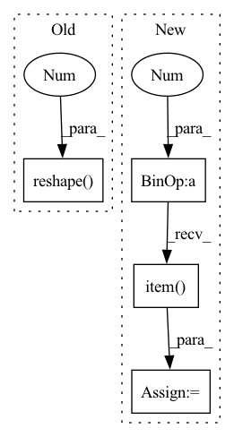

Pattern ID :18111

Before Change
criterion = MinTripletLoss(margin=1)
pos_dist_data = torch.ones(2, 1, 1) * 3
neg_dist_data = torch.arange(6).reshape(2, 1, 3)
loss = criterion(pos_dist_data, neg_dist_data).item()
self.assertEqual(loss, 5.5)
After Change
criterion = MinTripletLoss(margin=1)
user_emb = torch.ones(3, 1, 5)
pos_item_emb = torch.ones(3, 1, 5) * 2
neg_item_emb = torch.ones(3, 1, 5)
loss = criterion(user_emb, pos_item_emb, neg_item_emb).item()
self.assertGreater(loss, 0)
self.assertEqual(loss, 6)
In pattern: SUPERPATTERN
Frequency: 3
Non-data size: 4
Instances
Fragment ID: 59314568
Project Name: hand10ryo/pytorchcml
Commit Name: bab75ff79e4e34d4bb9332eda0fcd9eb2e2a0628
Time: 2021-04-25
Author: hand10ryo@yahoo.co.jp
File Name: tests/losses/test_MinTripletLoss.py
M Class Name: TestMinTripletLoss
N Class Name: TestMinTripletLoss
M Method Name: test_forward(1)
N Method Name: test_forward(1)
M Parent Class: unittest.TestCase
N Parent Class: unittest.TestCase
M File Name: tests/losses/test_MinTripletLoss.py
N File Name: tests/losses/test_MinTripletLoss.py
M Start Line: 21
M End Line: 23
N Start Line: 17
N End Line: 22
'>
Before Change
criterion = SumTripletLoss(margin=1)
pos_dist_data = torch.ones(2, 1, 1) * 3
neg_dist_data = torch.arange(6).reshape(2, 1, 3)
loss = criterion(pos_dist_data, neg_dist_data).item()
self.assertEqual(loss, 26)
After Change
criterion = SumTripletLoss(margin=1)
user_emb = torch.ones(3, 1, 5)
pos_item_emb = torch.ones(3, 1, 5) * 2
neg_item_emb = torch.ones(3, 1, 5)
loss = criterion(user_emb, pos_item_emb, neg_item_emb).item()
self.assertGreater(loss, 0)
self.assertEqual(loss, 18)
'>
Fragment ID: 59314554
Project Name: hand10ryo/pytorchcml
Commit Name: bab75ff79e4e34d4bb9332eda0fcd9eb2e2a0628
Time: 2021-04-25
Author: hand10ryo@yahoo.co.jp
File Name: tests/losses/test_SumTripletLoss.py
M Class Name: TestSumTripletLoss
N Class Name: TestSumTripletLoss
M Method Name: test_forward(1)
N Method Name: test_forward(1)
M Parent Class: unittest.TestCase
N Parent Class: unittest.TestCase
M File Name: tests/losses/test_SumTripletLoss.py
N File Name: tests/losses/test_SumTripletLoss.py
M Start Line: 21
M End Line: 23
N Start Line: 17
N End Line: 22
'>
Before Change
def get_loss(self, x):
predictions = self(x[:, :-1])
loss = F.cross_entropy(predictions.reshape(-1, predictions.shape[-1]), x[:, 1:].reshape(-1))
accuracy = (torch.argmax(predictions[:, -1, :], dim=-1) == x[:, -1]).float().mean()
return loss, {"loss": (loss.item(), x.shape[0]*(x.shape[1]-1)), "accuracy": (accuracy.item(), x.shape[0])}
After Change
// print(torch.argmax(predictions[:, -1, :], dim=-1), x[:, -1])
loss = F.cross_entropy(predictions[:, -1, :], y)
accuracy = (torch.argmax(predictions[:, -1, :], dim=-1) == y).float().mean()
attn_entropies = sum([-(attn * torch.log(attn+1e-7)).sum(dim=-1).mean().item() for attn in attns]) / len(attns)
param_norm = parameter_norm(self)
return loss, {"loss": (loss.item(), x.shape[0]), "accuracy": (accuracy.item(), x.shape[0]),
"attn_entropy": (attn_entropies, len(attns)*x.shape[0]*(x.shape[1]-1)), "param_norm": (param_norm, 1)}
'>
Fragment ID: 59314565
Project Name: sea-snell/grokking
Commit Name: 9652db76d1cbdbe66e24e709168b12fa25ba00fc
Time: 2021-11-18
Author: sea_snell@icloud.com
File Name: grokk_replica/grokk_model.py
M Class Name: GrokkModel
N Class Name: GrokkModel
M Method Name: get_loss(3)
N Method Name: get_loss(2)
M Parent Class: nn.Module
N Parent Class: nn.Module
M File Name: grokk_replica/grokk_model.py
N File Name: grokk_replica/grokk_model.py
M Start Line: 17
M End Line: 20
N Start Line: 18
N End Line: 26